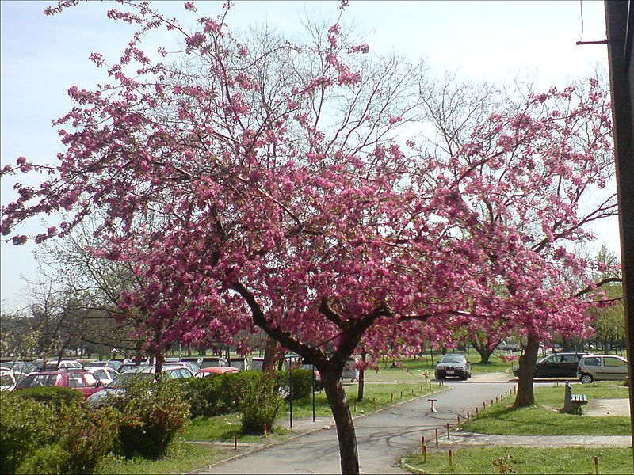

Proleće je jedno od godišnjih doba, koje na severnoj Zemljinoj polulopti traje deo marta, ceo april, maj i deo juna,
a na južnoj Zemljinoj polulopti deo septembra, ceo oktobar, novembar i deo decembra. Na dan početka proleća, takozvanu prolećnu ravnodnevnicu,
koja obično pada 20. marta, obdanica i noć traju po 12 sati.
Na narednoj slici možete videti procvetalo prolećno drvo iz roda jabuka.

U proleće možemo čuti divne zvuke ptica.
Ako vas zanima da pogledate koje ste vrste ptica čuli, pustite sledeći video.